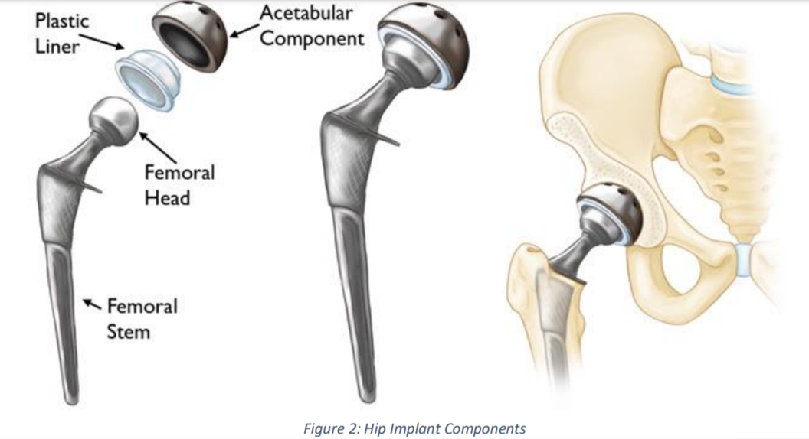
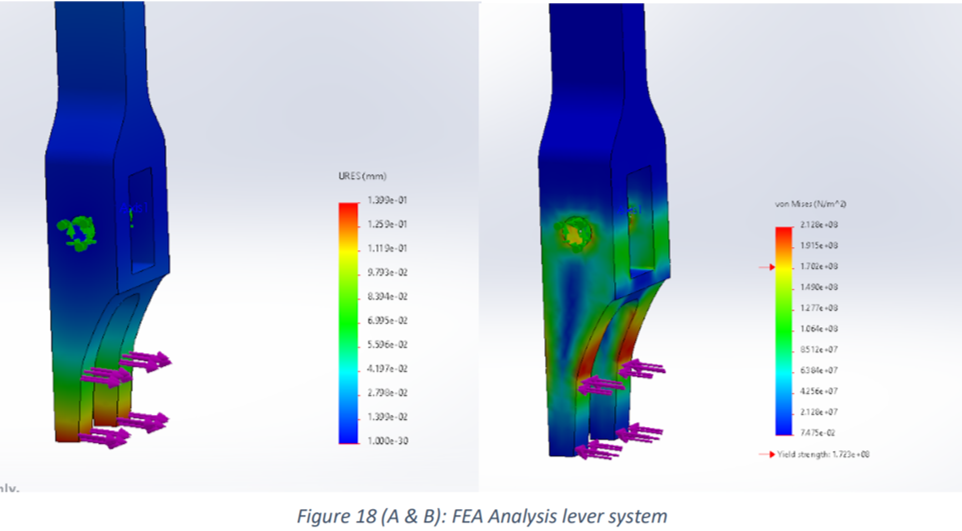

<!DOCTYPE HTML>
<!--
	Massively by HTML5 UP
	html5up.net | @ajlkn
	Free for personal and commercial use under the CCA 3.0 license (html5up.net/license)
-->
<html>
	<head>
		<title>Femoral Removal Tool</title>
		<meta charset="utf-8" />
		<meta name="viewport" content="width=device-width, initial-scale=1, user-scalable=no" />
		<link rel="stylesheet" href="assets/css/main.css" />
		<noscript><link rel="stylesheet" href="assets/css/noscript.css" /></noscript>
	</head>
	<body class="is-preload">

		<!-- Wrapper -->
			<div id="wrapper">

				<!-- Header -->
					<header id="header">
						<a href="index.html" class="logo">Massively</a>
					</header>

				<!-- Nav -->
					<nav id="nav">
						<ul class="links">
							<li><a href="index.html">Front Page</a></li>
							
							<li class="active"><a href="fermoral_tool.html">Elements Reference</a></li>
						</ul>
						<ul class="icons">
							<li><a href="#" class="icon brands fa-twitter"><span class="label">Twitter</span></a></li>
							<li><a href="#" class="icon brands fa-instagram"><span class="label">Instagram</span></a></li>
							<li><a href="#" class="icon brands fa-github"><span class="label">GitHub</span></a></li>
						</ul>
					</nav>

				<!-- Main -->
					<div id="main">

						<!-- Post -->
							<section class="post">
								<header class="major">
									<h2>Femoral Head Removal Tool</h2>

									<span class="image fit2"></span>
									


								</header>

								

								<hr/>

								

								<header>
									<h2>Introduction: Hip Implants</h2>
									<span class="image left1"></span>
									<span><p>Hip implants are intended to reproduce the function and properties between the femur and 
										pelvis ball-and-socket connection. As seen in Figure 1, the socket exists on the pelvis bone, 
										formed by the acetabulum. The femoral head is located at the top of the femur. The 
										intermediary tissue of articular cartilage can be found on the surface of the ball and socket in 
										order to achieve easy movement. The synovial membrane tissue surrounds the hip joint which 
										produces fluid to lubricate the articular cartilage in order to achieve a smooth interaction 
										between ball and socket and avoid friction. The ball is stable and connected to the socket 
										through ligaments.
									
									<br>There are multiple reasons why patients may require or wish to get a hip implant. Injury, 
									trauma or general damage to the joint can all contribute to the decision to get a hip implant. 
									One of the most common problems is osteoarthritis; when the articular cartilage wears away, 
									and the bones grind against each other causing pain and preventing proper movement of the 
									joint. This could result in permanent damage of the joint requiring a prosthesis to function 
									correctly. This type of arthritis is more commonly seen in patients of older age, as well as if 
									there was a previous injury to the joint, or the patient suffered from obesity.
									 
									To reproduce the behaviour of the biological joint, hip implants consist of 4 major 
									components, depicted in Figure 2.</p></span>

									<span class="image fit"></span>

									<span><p>The femoral stem is placed in the femur with a press-fit or cement method.
										 The femoral head 
										is fitted onto the stem taper by hand initially, then the head impactor with a polymeric 
										concave end is used to press-fit the head onto the tapered ‘neck’ end of the femoral stem. 
										The polymeric end is used to avoid damaging the femoral head with the hammering force 
										required for fitting. The material of the femoral head is Cobalt-Chrome or Ceramic to ensure 
										there is a sufficient fracture strength as well as low bioreactivity.</p></span>

										<span class="image fit1"></span>
										<hr/>
										<span class="image fit1"></span>
										<span><p>Depending on the patient, the hip implant may need to be replaced because of wear. This
											requires removing the femoral head from the femoral stem. The current procedure to remove 
											the femoral head requires placing a Hibbs Osteotome (chisel) by the head, pointing towards 
											the direction the head will come off, and hitting the chisel at the back with a mallet several 
											times. There may be an additional person holding the body to keep it from moving due to the 
											impacts. Using the force from the mallet is necessary to overcome the force of the press-fit, 
											but this procedure often damages in the head and is potentially dangerous to the patient, 
											both because of the effects that the impact force can have on the bones and also because of 
											the risk of the chisel slipping and striking the patient</p></span>
                                        
									<hr/>

									</header>
									<hr/>
									
								

								<hr/>

								<header>
									<h2>Design Brief</h2>
									<span><p>For this project we were given the task of designing a tool to remove the head of the hip 
										implant from the implant’s stem. The following are the physical and design constraints that 
										will guide the product’s development</p></span>

										<ul>
											<li> Does not cause damage to either 
												stem or head.</li>
											<li>Can be used in a patient and on a 
												benchtop.</li>
											<li>Does not pull stem out of femoral 
												bone or cause bone damage.</li>
											<li>Does not result in a dropped head.</li>
											<li>Is intuitive to use by one person 
												and does not require excessive 
												force to operate.</li>
											<li>Can be cleaned and sterilized (by 
												autoclave.</li>
											<li>Does not infringe on any existing 
												patents.</li>
											<li>Usable with a variety of femoral 
												stem sizes and variants.</li>
											<li>Usable with head diameters of 
												22.225 mm, 28 mm, 32 mm, 36 
												mm, and 40 mm as well as CoCr and 
												Ceramic.</li>
											<li> Applies an axial force on head of at 
												least 2000 N.</li>
										
										</ul>

										<hr/>
										<span><p>The following diagrams show the size variation of the different implants. The tool designed 
											should be able to fit all of the specified dimensions with minimal adjustments.</p></span>
											<span class="image fit1"></span>
											<span class="image fit1"></span>

											<span><p>By measuring the three samples that were given to us by DePuy, we noticed that the 
												minimum distance between the base of the head (when put on), and the point where the 
												neck started to expand to merge with the body of the implant, was just over 12 mm. This 
												measurement was important because it determined the minimum amount of space where 
												we could fit any sort of part/mechanism to push the head off the stem. Figure 3 shows the 
												Figure 5: Implant dimensions
												Figure 6: Neck size variations
												6
												cross-sectional dimensions of the neck of the implant. These measurements differ slightly for 
												different models, so for the purpose of designing a universal tool we will be using the larger 
												measurements, to ensure that the tool can go over and around them without a problem.</p></span>

												<span class="image fit1"></span>


								</header>

								<!-- Text stuff -->
									<h2>Current Head Removal System</h2>
									<span class="image left1"></span>


									<span><p>There are various reasons to remove a femoral implant’s head. Because of extended use, the 
										artificial joint may wear, and although it might not require a new implant socket, the size of 
										the head might need to be increased so that it is a better fit. Changes may also be done when 
										testing samples and for general research and development. 
										The current system for removing the head from the implant is to use a hammer and chisel to 
										hit it off the taper. Apart from being dangerous for the patient (because there is a risk of 
										serious injury of the chisel slips), the procedure often damages the head, and may scratch or 
										damage the taper in certain circumstances. The shock of the repeated impacts can also affect 
										the cementation of the implant into the bone, and could either dislodge it, or damage the 
										bone itself, which can lead to huge complications in the patient. 
										During a surgical procedure, the patient is put 
										under general or spinal analgesic, and a maximum 
										of two 10cm incisions are made on the leg or hip 
										areas to access the implant. Figure 4 shows a 
										snapshot of a hip implant replacement procedure. 
										As shown, there is very little space to manoeuvre
										any device, and the risk posed by the current chisel 
										method highlights the need for a new head 
										removal method. During the surgical procedure 
										there is little risk of the head flying off and falling 
										to the floor (potentially breaking). This is because 
										the muscles and tissue of the leg press around the 
										head, and absorb any speed or force that the head 
										acquires from the removal process.</p></span><hr />

										<hr/>
									
											<h2>Design Process</h2>
											<p><span class="image right"></span>

											<span><p>The requirements of 2000N force to remove the head from the 
												taper made us originally consider spring-loaded mechanisms 
												that could be loaded before the surgery or R&D operations. 
												This would mean that the force could be exerted by an 
												electrical tool externally, and then have the surgeon (or 
												researcher) deploy the device without the need to put in any 
												major effort. </p></span>

												<p><span class="image left"></span>

													<span><p>Figure 10 and 11 show two different 
														solutions using loaded elements. Figure 10 
														has spring inside of the box, which is 
														loaded via the thread hole on the side. The 
														idea with this is that a machine would load 
														the screw to the point where it can deliver 
														2000 Newtons when released. The 
														problem with this design, however, is that 
														the release would be instantaneous, and 
														the force of the impact could cause 
														damage to both the implant and the 
														patient’s bones. 
														For this reason, we developed a second 
														design, where the thread part could be 
														controlled by the user. We also decided to 
														avoid the use of an external machine to 
														load the device because it would mean an 
														extra device for institutions to purchase. 
														The second design is pre-loaded by turning 
														the handle. This retracts the two forks into 
														the ‘sheath’, reducing the dimension of the 
														gap so that they fit between the implant 
														and the head. Once in place, the surgeon 
														or researcher can slowly unscrew the 
														handle to release the spring’s pressure as
														shown in Figure 9.</p></span>

														<span><p>Some issues we identified with the design in Figure 2 were that the rotating motion could 
															cause mechanical inefficiencies given that the movement of the handle was not aligned with 
															the movement of the forks. We also realized that having a screw going through the entire 
															‘sheath’ bit of the tool would become filled with blood and dirt and would be very 
															complicated and annoying to clean for the users. We did prefer the manual approach, where 
															the mechanical gain to 2000N would allow the user to operate the device without another 
															machine. 
															This called for improvements to the grip and force-acting handles, so that they were more 
															comfortable, aligned, and would give the surgeon or researcher enough leverage to 
															successfully remove the femoral head.</p></span>

													<hr/>

													<span><p>A model was 3D-printed to test the working principles and ergonomics of the force 
														application. These can be seen in Figure 13</p></span>

														<span class="image fit1"></span>

														<span><p>Once we handled the printed model we realized there were several major drawbacks to the 
															design. The double lever system made the tool very unstable, and it was difficult to move it 
															in a precise enough manner required during a surgery. The upwards motion, while not a major 
															obstacle, felt somewhat strange, and could mean that some users might not be able to exert 
															the necessary force on the tool. 
															Therefore, we chose to explore a single-lever system, where only one hand would move while 
															the other held the tool in place.</p></span>

															<span class="image fit1"></span>

															<span><p>This was the final design for the single-lever system. The implant can be seen at the bottom 
																of Figure 16 as it would be gripped by the tool. Protruding from the top is a removable handle 
																that the user will pull as the main lever. This will in turn move the second lever (right-handside), which will push the head apart. 
																</p></span>


																<p><span class="image left"></span>
																	<span><p>Figure 15 shows how the two forks would be 
																		adjusted to fit the different implant sizes. The 
																		butterfly screw is flattened on the sides so that 
																		when it is twisted 90º it can easily shift from one 
																		groove to the next, making the process easy and 
																		simple. 
																		One of the issues that could arise during the surgery 
																		(and also R&D) is that the head flies off and breaks
																		when it impacts the floor or the table. Top prevent 
																		this from happening, one idea was to add a tongue 
																		(as shown in Figure 15) to keep the head inside the 
																		body after it was removed. </p></span>

																		<hr/>

																		<header>

																		<h2>Final iteration of single lever design</h2>
																		</header>

																		<span class="image fit"></span>

																		<h2>FEA ANALYSIS</h2>
																		<span><p>Finally, and perhaps most importantly, after receiving the sample implants we discovered that 
																			for the tool to fit the smallest of the implants, the dimensions of the fork would make it too 
																			weak to deliver the necessary force. FEA analysis was conducted to determine how much the 
																			pieces would deform under the required load.</p></span>

																			<span class="image fit"></span>

																			<span><p>From the analysis, it was clear that the design had mechanical disadvantages. Figure 18A
																				showed a gradual bending of the prongs ranging from 0.7mm to 1.3mm. Figure 18B confirms
																				that the pressure of the contact points would not be evenly distributed, and it caused some
																				areas of the forks to exceed the yield strength, causing first elastic deformation and then
																				plastic (permanent) deformation. This would render the tool useless, and it left us with the
																				problem of not being able to use it for the smaller implants, something that was not an
																				acceptable compromise.</p></span>


																				<hr/>

																				<h2>Final Design</h2>
																				<span><p>From the previous models we had experimented with and analysed the following conclusions 
																					became predominant consideration factors for the final design:</p></span>

																					<ul>
																						<li> The user must be the only one generating the force. In essence, no spring-loaded 
																							mechanism or pre-loaded systems. </li>
																						<li> The device must have the minimum number of moving components possible. This is 
																							to facilitate cleaning but also to prevent the contraption to become difficult to 
																							manoeuvre into position. Ideally, the user should be able to have total control of the 
																							entire device at tOLED he moment of insertion.</li>
																						<li>The position of the handles should be aligned along the direction of the force (force 
																							to be exerted by the user). This direction is towards/away from the user’s chest.</li>
																						<li>The handles should be the same height, for user comfort and so that their usage is 
																							clear.</li>
																						<li>The device should have a very minimal degree of flexibility. It is preferable that this 
																							value is null, especially for the parts that will be directly pushing off against the 
																							femoral implant’s head and ‘shoulders’.</li>
																						<li>The device should be reversible, or have very clear indications of what the intended 
																							working position is.</li>
																						<li>The device must be able to accommodate all the shapes and sizes of the different 
																							implants.</li>
																						
																					
																					</ul>


																					<span><p>The first focus at this stage of the design was the part of the device that exerted the 2000N 
																						force required at the implant site. It was clear that the leverage system used in the previous 
																						design was not suitable because it left very little room for the required size of the device, so 
																						inspiration was taken from threaded screws. Being centred around a single central axis, 
																						systems of nuts and bolts are also ideal for linear force application, like the one required to 
																						remove the femoral head from the implant. 
																						Because the device needed to fit around the implant’s neck, the regular nut & bolt system 
																						needed to be adjusted. One alternative was to carve a ‘hole’ or opening in the screw where 
																						the neck could fit (see Figure 19). However, this was a very crude idea, since the threading 
																						would become an issue for cleaning and would inevitably cause too much friction due to dirt 
																						or mechanical deformations over time.</p></span>

																						<span class="image fit3"></span>

																						<span><p>Additionally, we needed the force to be achieved with the minimum amount of rotation, as 
																							this would have to be done with handles, which wouldn’t have a lot of space to turn if the 
																							implant is inside a patient’s body (accessed through a small cut on the skin). From these 
																							constraints we took apart the screw’s mechanical gain system as a function of movement in 
																							the horizontal and circular directions, and redesigned the system to fit our needs. </p></span>

																							<span class="image fit3"></span>

																							<span><p>Figure 19 shows the two-part pseudo-screw system that is the core of our final design. The 
																								axis of the force runs along the centre of the circles, and as the two parts are turned against 
																								each other, the shape of the teeth will turn that circular motion into a linear displacement. 
																								This will in turn push the head off the femoral implant. See Figure 21 for a diagram of the 
																								mechanical progression as the two parts are rotated against each other. This design translates 
																								a 10-degree rotation into a 1mm displacement along the central axis of the two rings. This 
																								1mm displacement will be what pushes the femoral head off the stem’s taper. </p></span>

																								<span class="image fit3"></span>
																								<span class="image fit3"></span>

																								<span><p>To prevent the two rings from misaligning, there is a guide rail system in place. While these 
																									two pieces can easily be separated by the user, when there is pressure on the outside by the 
																									head and ‘shoulders’ of the implant, this system will keep them in place and make the rotation 
																									translate into linear displacement correctly and effectively. While the guide rail is in the 
																									centre of the piece here, it can easily be moved to either the outer edge or the inner edge of 
																									the rings. It makes no difference aside from possible cleaning hygienic advantages. </p></span>
                                                                                                    
																									
																									<span><p>One of the major advantages of this design is that there is no risk of the ‘force pieces’ around 
																										the neck bending or becoming deformed from the pressure, since they are solid metal pieces 
																										where the forces are overwhelmingly compressive.</p></span>

																										<p><span class="image left"></span>

																											<span><p>Figure 24 shows the design for the handles. Each ring is 
																												attached permanently to a handle, making the device have 
																												a total of 2 detachable pieces. As evident in Figure 22 & 
																												24, the handles protrude from the rings and then cross 
																												over to align in a perfect centre. This will make the pulling 
																												movement (as described by the arrows) as even as 
																												possible. Naturally, there will be a slight discrepancy in the 
																												alignment because of the 1mm displacement, but it is 
																												negligible. The device is reversible, and for all intents and 
																												purposes can be used both ways.
																												A major issue that arises from this design is that the two 
																												pieces are not held in place by anything when not in use. 
																												While it is not strictly necessary, and indeed not desirable 
																												to have the two pieces attached permanently, the lack of 
																												structure is inconvenient because it makes the insertion 
																												into the patient and around the neck of the implant 
																												cumbersome and inconvenient. </p></span>

																												<span><p>For this reason, we introduced two magnets, both permanently attached to the device, to 
																													hold it in place only when necessary.</p></span>
																													<span class="image fit3"></span>

																													<span><p>Figure 25 shows the placement of the magnets, which sit in the same position on their 
																														respective handles. They are not very strong, and will only serve to keep the tool together 
																														and in place while it is manoeuvred into the patient’s body. Once in place, the user will move 
																														the handles (to actuate the mechanism), and the magnets will lose relevance (and attractive 
																														force). This means they will not interfere with the force translation mechanism, and don’t 
																														require the user to exert more pressure on the handles.</p></span>

																														<hr/>

																														<h2>Size Ajustability</h2>
																														<span><p>The adjustability mechanism we had on the previous single-handle design was easy to use, 
																															but it created a lot of cavities and spaces that would be complicated to clean, and might lead 
																															to infections and other hygienic issues that must be avoided at all cost in a surgical procedure 
																															and environment. Therefore, we kept to the magnet approach and decided to use the device 
																															shown above as a base system that would fit the smallest size implant & head combination, 
																															and then have add-on spacers that would fit snugly to all of the different shapes and sizes of 
																															the implant’s components. Figure 26 shows examples of what these add-ons might look like.</p></span>
																															
																															<span class="image fit"></span>

																															<span><p>The maximum horizontal displacement of the tool along the implant neck’s axis is 1mm. 
																																Therefore, the idea of the spacers is to be able to get the free space in between the tool and 
																																the implant parts as close to 0.2mm as possible, so that the 10-degree movement starts 
																																almost exactly where it should, and the step is sufficient to exert the force required on the 
																																implant. The magnetic spacers will be usable on both sides, and will have parts for the 
																																‘shoulder’ bit and for the base of the femoral head. 
																																These pieces will be single-surface objects, and will be easy to remove since the magnetic 
																																force will not be strong: only sufficient to keep it in place while the tool is placed in the correct 
																																position. After that, the pressure of the implant will keep them in place. Slippage is not a 
																																problem because they will be made to fit perfectly around the implant’s ‘shoulders’ and head. </p></span>


																																<h2>Techincal Drawings</h2>
																																<span class="image fit3"></span>


																																<hr/>

																																<h2>Testing and Prototyping</h2>
																																<span><p>One of the major concerns we had with the teeth & rail system was whether the dimensions 
																																	and design of each side was correctly fitted to the other throughout the 10-degree twist. It 
																																	was not clear from the CAD designs we had whether the entire surface area of the teeth’s 
																																	slope would be in contact with the teeth on the opposite ring, but the model in Figure 28
																																	helped us prove that the working principle of the teeth mechanism had been correctly 
																																	designed. During the development of the teeth pattern we were trying to decide whether the 
																																	dimensions and shapes of the teeth would work or not, and it was quite difficult to do only 
																																	mentally. This model showed that our calculations and approach was congruent with the 
																																	physical dimensions and mechanical steps of the solution.</p></span>

																							<span class="image fit3"></span>

																							<hr/>
																							<h2>Force Calculations</h2>
																							<p>These were done along the way several times for the different models but the ones for the 
																								final design are synthesized here for clarity.)</p>

											<span class="image left2"></span>


											<span><p>At the outermost edge of the ring, the rise of 1mm is 
												achieved by a circumferential displacement of 
												approximately 2mm. This introduces a factor of 0.5, and 
												reduces the 2kN load to 1kN. 
												As per the dimensions in the diagrams above, the force 
												calculation at the centre of the handles is as follows: 
												247.5x = 12.5 · 1000N
												247.5 is the distance from the centre of the ring (pivot 
												axis) to the middle of the handle, where the hand’s force 
												will be centred.</p></span>

												<span><p>12.5 is the distance from the pivot axis to the outside of the ring, where initial 0.5 factor was 
													taken from.</p></span>

													<span><p>Therefore, the force to be exerted by the user through the handles is 50.5 Newtons. This is 
														further divided into two because there are two handles, so each arm will be exerting less than 
														2.6kg of force. What this translates to is that the tool will be usable by surgeons and 
														researchers who are not particularly strong, and it will not represent a big amount of energy 
														expenditure, making it convenient, quick and easy to operate.</p></span>


									<hr/>
									
									<h2>
										Material & Manufacturing
									</h2>

									<span><p>The criteria for the material selection was the following:
									</p></span>

									<ul>
										<li>300 degree Celsius as minimum service temperature to ensure the material’s 
											mechanical performance isn’t affected during sterilization.</li>
										<li>High modulus to ensure the material does not yield when high force is applied.</li>
										<li> Easy to manufacture and reasonable cost.</li>
										
									
									</ul>

									<span><p>The chosen material for this application (aside from the magnets and their protective 
										coatings) was <b>Austenitic 316 (AISI 316L) Annealed Stainless Steel.</b></p></span>

										<span class="image fit3"></span>

					<span><p>The manufacturing process suitable for this design is CNC machining only. The chosen 
						material is unsuitable for casting in any case, but the level of detail and precision required for 
						the teeth and rail bits benefit from precise CNC finishes. </p></span>			
					<span><p>Since the material is non-magnetic, the magnets must be added on both handles, as well as 
						along the rings and removable spacers. This is done by drilling cavities into the tool and then 
						slotting the magnets inside. A non-magnetic coating is then added to protect the magnets 
						from damage. The shape and size of these depends on the magnets available, but most likely 
						it will be rectangular shaped magnets for the handles (as shown in the design), and small 
						circular ‘coin’ magnets for the rings and spacers. This is so that they retain their stiffness, a 
						main specification of the pieces.</p></span>		


		


								

									
								

	


									
										
									

								
									
									


							


								<!-- Preformatted Code -->
								
									<pre><code>


</code></pre>

						

					</div>

				<!-- Footer -->
					<footer id="footer">
						<section>
							<form method="post" action="#">
								
								
							</form>
						</section>
						
						
							<section>
								<h3>Phone</h3>
								<p><a href="#">07986706137</a></p>
							</section>
							<section>
								<h3>Email</h3>
								<p><a href="#">sujangurung10@gmail.com</a></p>
							</section>
							<section>
								<h3>Social</h3>
								<ul class="icons alt">
								
									<li><a href="#" class="icon brands alt fa-linkedin"><span class="label">Facebook</span></a></li>
									<li><a href="#" class="icon brands alt fa-instagram"><span class="label">Instagram</span></a></li>
									<li><a href="#" class="icon brands alt fa-github"><span class="label">GitHub</span></a></li>
								</ul>
							</section>
						
					</footer>

				<!-- Copyright -->
					<div id="copyright">
						<ul><li>&copy; Untitled</li><li>Design: <a href="https://html5up.net">HTML5 UP</a></li></ul>
					</div>

			</div>

		<!-- Scripts -->
			<script src="assets/js/jquery.min.js"></script>
			<script src="assets/js/jquery.scrollex.min.js"></script>
			<script src="assets/js/jquery.scrolly.min.js"></script>
			<script src="assets/js/browser.min.js"></script>
			<script src="assets/js/breakpoints.min.js"></script>
			<script src="assets/js/util.js"></script>
			<script src="assets/js/main.js"></script>

	</body>
</html>